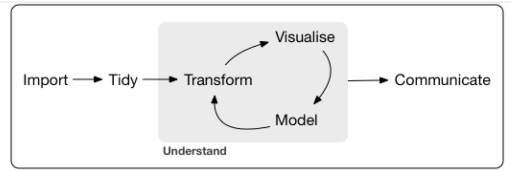
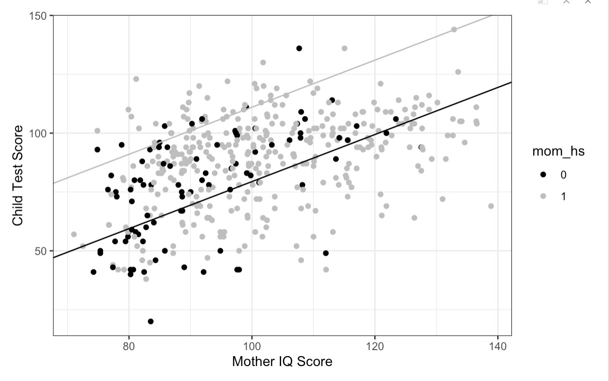
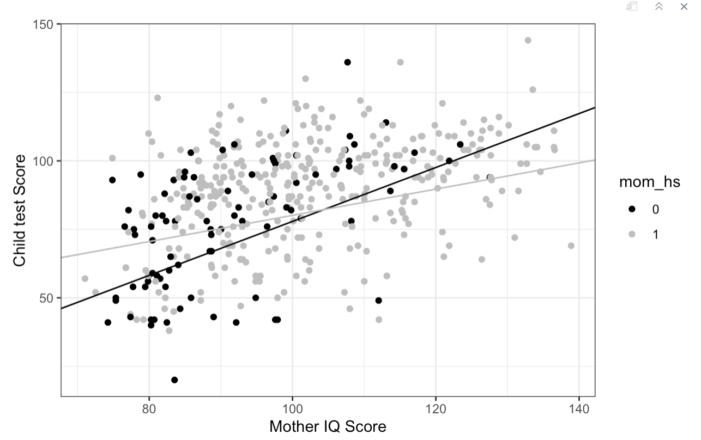
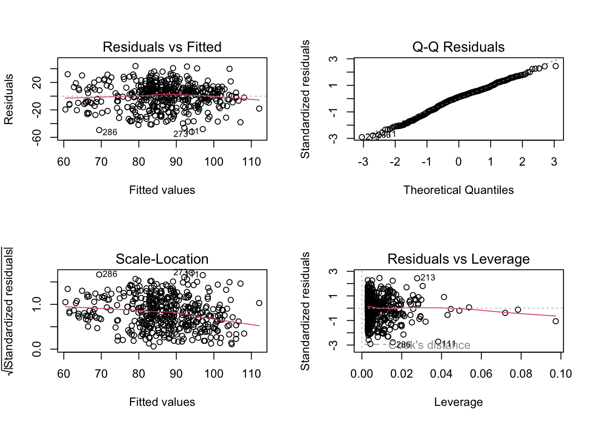

There are two zipped folders to download for week 13:
The first folder is a zipped folder called Lecture_Week_13_Materials.zip. It can be downloaded here. This has the script and the KidIQ.txt file for the model that was demonstrated in the lecture
The second folder is called Lab_Week_13_Materials.zip. In this folder is the WorldHappinessReportData.csv and a half prepared .Rmd file for the lab in week 13. I did this because it is a really interesting dataset but the tidying and visualisation would take forever….please download it here.
Pre-Lab Activity
Watch the lecture and play with the lecture script before you attempt anything!
Download the zip files and upload to your R account
Look at the model outout above, begin by interpreting the model summary, as far as you can (as we did in Lab in week 11 & 12).
Next get the analysis work flow diagram and begin to think about what piece of code do you need for each stage
Start a script and import the dataset. Use the lecture and the model script as a guide
Write a plan of how you might approach an analysis to get to this model
you could write bullet points against the stages of the analysis workflow diagram
You might want to stop at this point - wanting some confirmation from your peers or staff; you could:
post to the discussion forum at this point and we could discuss it
talk amongst your peers and work together on it in independent study time - forming a small study group for this process
wait until the lab and bring ideas then…
Lab Task
We are working with the WorldHappinessReportData.csv from the folder listed above. Upload it to the R server, (preferably before you come to the lab) and complete the Multiple_Regression_Interactions_Student.Rmd file using that data.
The model output you are aiming to match is below
Model output
My predictor labels and suffixes
The model output has several predictors with suffixes, demarcated by an underscore ‘_’ and a letter e.g. ‘_h’; I explain these in the R Studio demonstrations in the lecture and you can use these as a guide to which kind of processes you may choose to use to transform any variables.
Test Yourself
The link to this week’s multiple choice quiz, WBA 3, is here
Lecture & Demonstration Script for Interactions
So far we have considered models with multiple variables - of both categorical and continuous types. One property of all these predictors in these models has been that they are functionally independent of each other.
What does functionally independent of each other mean? This means that, irrespective of any correlated relationship that we may have visualised as we got to know the data, when it came to coding the model, we did not let the variables talk to each other. We only let them talk to the outcome variable.
You have met interactions in PSYC214. The focus of this week’s lecture and lab is to introduce interactions in the context of a multiple regression model.
I am also going to introduce a concept called nested modelling. This is where a researcher builds a series of models and with each step, the model takes the previous model and builds directly onto it. In this way, the previous model is contained, or nested, in the latest model.
This strategy of building a model has immediate benefits because you can test for a significant difference between the two models. For instance, when you are unsure about what predictors may make the best fitting model. Or if you were in an exploratory research framework. It can also have benefits for when you have collected confounding or third variables. Finally, if you are unsure that using an interaction term in your model has resulted in a better fit for the data, having two models, with the first model also existing within the larger second model, gives you the opportunity to test for the utility of that interaction term
In summary, this week we are learning about and applying:
interaction terms within a multiple regression model
nested modelling
a principled method for saying that one model is a better fit for the data than another
While also thinking about the workflow of a good analysis.

Workflow
Thinking and acting systematically will a) help your writing of any results section and b) help with your interpretation of models and ideas to write for your discussion section.
Import
Before beginning, I will introduce the dataset to you:
kid_score mom_hs mom_iq mom_age
Min. : 20.0 Min. :0.0000 Min. : 71.04 Min. :17.00
1st Qu.: 74.0 1st Qu.:1.0000 1st Qu.: 88.66 1st Qu.:21.00
Median : 90.0 Median :1.0000 Median : 97.92 Median :23.00
Mean : 86.8 Mean :0.7857 Mean :100.00 Mean :22.79
3rd Qu.:102.0 3rd Qu.:1.0000 3rd Qu.:110.27 3rd Qu.:25.00
Max. :144.0 Max. :1.0000 Max. :138.89 Max. :29.00
There are 434 observations over four variables. A simple dataset for our demonstration. We have:
kid_score: a continuous variable of test scores for children at 3 years-of-age; this is the outcome variable for this dataset
mom_hs: a categorical variable describing whether the mother of the 3-year-old complete their high school education or not. Two levels: 0 = no; 1 = yes
mom_iq: a continuous variable of IQ scores of the mothers in this sample. The mean in this sample is 100 - which reflects the wider population average
mom_age: a continuous variable of age in years, captured at the time of testing of the child.
Tidy
From the summary above, it appears to be a tidy dataset in as much as there are no missing observations. Woohoo!
However, mom_hs is currently viewed by R as a numerical variable, when it is a categorical variable. For clarity, lets transform this now before visualising the dataset
d$mom_hs <-as.factor(d$mom_hs)summary(d)
kid_score mom_hs mom_iq mom_age
Min. : 20.0 0: 93 Min. : 71.04 Min. :17.00
1st Qu.: 74.0 1:341 1st Qu.: 88.66 1st Qu.:21.00
Median : 90.0 Median : 97.92 Median :23.00
Mean : 86.8 Mean :100.00 Mean :22.79
3rd Qu.:102.0 3rd Qu.:110.27 3rd Qu.:25.00
Max. :144.0 Max. :138.89 Max. :29.00
With that small change, we can see the mom_hs much more clearly. But still, a picture speaks a thousand words…
I have visualised the outcome variable here aswell, to help us get to know a little more about it. Notice also how I have used histograms rather than a smooth density plot for the continuous variables, because they are measured in whole points; there are no fractions of points in these measures. So we can still see the distributoin of the values, but using a histogram may remind you that the granularity of the measurement is in whole units, with no decimal values (not like something like milliseconds, for instance).
Hopefully, after last week’s lecture you will see that the continuous variables all show a pretty tolerable normal curve. You might say that there is a slight negative skew on the kid score and a slight positive skew on the mom_iq, but nothing too drastic.
But look at the mom_hs variable. It is unbalanced - thankfully. Within the group, I hope we all appreciate the value of a basic education. So, within the sample, the mother’s who completed their high school education are represented more than mothers who did not complete thrie high shcool education, at an approximate ratio of 3:1. Quick check - what kind of transformation is indicated here (based on last week’s learning)?
Correlations between continuous variables
Because we have multiple predictors of a continuous variables, we may choose to look at (and put a less garish version of) a correlation matrix to understand correlations between pairs of variables before modelling.
Here, I have left in the outcome variable kid_score. You can leave it in or out. It is just for getting to know the data.
Starting from the top left: From kid_score, move one square to the right and you get r = .45; then move one square down and you hit mom_iq. r = .45 is the correlation between those two variables
From kid_score, move two squares to the right and you get r = .092; then move two squares down and you hit mom_age. r = .092 is the correlation between those two variables
However many squares you count across, count the same amount of squares down to find the paired variable.
I am going to leave the majority of the interpretation of this matrix to you for practice, but note one thing. The predictor mom_age is only weakly correlated with both mom_iq and the outcome variable, kid_score. Any thoughts on the whether it will be a significant predictor in a multiple regression model?
Transform
I have an unbalanced variable, mom_hs, so I want to transform this variable. I choose to centre the variable. And by doing so, I should do it for mom_iq and mom_age, to aid with interpretation.
table(d$mom_hs)
0 1
93 341
Completing high school = 1 here.
# make mom_hs a numeric variabled$mom_hs_c <-ifelse(d$mom_hs =="1", 1, 0)summary(d$mom_hs_c)
Min. 1st Qu. Median Mean 3rd Qu. Max.
0.0000 1.0000 1.0000 0.7857 1.0000 1.0000
The mean is quite high because of the greater quantity of 1 values in the variable; so when we mean centre, we will subtract 0.7857 from every observation. Consequently, the group of mothers who did not complete high school will be negative values (0-0.7857), while the mothers who did complete high school will be positive numbers (1-0.7857).
# now complete the rescaling by taking the mean away from every observationd$mom_hs_c <- d$mom_hs_c -mean(d$mom_hs_c)summary(d$mom_hs_c)
Min. 1st Qu. Median Mean 3rd Qu. Max.
-0.7857 0.2143 0.2143 0.0000 0.2143 0.2143
Repeat the centring with the two continuous variables. You don’t need to do the ifelse command in this case, as they are already numeric variables
Remember under raw data, any regression coefficient is the change in the outcome variable for a one unit / level increase in the predictor variable when all other predictors are at zero
Now we have mean centred, the interpretation changes: any regression coefficient now represents a change in the outcome variable for a one unit / level increase in the predictor variable when all other predictors are at their sample average
Scroll back up to the visualisations for the raw data to look for the average IQ score and Age, from the middle of the plots’ x-axes. It is good to have a real number in your head to make sense of the models.
We are ready to build our first model.
Model
I said I was going to introduce you to the practice of nested modelling in this lecture. We start this by building the first model: The intercept only model, or an empty model. It is also sometimes called the null model, however the definition of a null model is not fixed. A null model can also be a baseline model from which you measure change, and does not necessarily have to be an empty model. While an empty model will always be an empty model because it has no predictors. An intercept model will always be an intercept only model because it only models the intercept.
The Empty / Intercept Only Model
We can express an empty or intercept only model like this:
\[
Y = b_0 + e
\]
The empty or intercept only model for any dataset expresses its mean value of the outcome variable:
mean(d$kid_score)
[1] 86.79724
And here is the model as a regression model:
summary(m0 <-lm(kid_score ~1, d))
Call:
lm(formula = kid_score ~ 1, data = d)
Residuals:
Min 1Q Median 3Q Max
-66.797 -12.797 3.203 15.203 57.203
Coefficients:
Estimate Std. Error t value Pr(>|t|)
(Intercept) 86.7972 0.9797 88.59 <2e-16 ***
---
Signif. codes: 0 '***' 0.001 '**' 0.01 '*' 0.05 '.' 0.1 ' ' 1
Residual standard error: 20.41 on 433 degrees of freedom
The regression coefficient matches the raw mean value I called above. So at this point, we can say that in the sample, the average score for a 3 year old child is approximately 87 points.
A Simple Regression - one predictor
Let’s add mom_iq. To demonstrate how model m0 is nested inside this larger model, I will write the formula out in words
\[
Model zero: Kid\_score = Intercept + error
\]
\[
model one: Kid\_score = Intercept + Mom's IQ + error
\]
Hopefully, you can see how the first model is in the second model. The change in the second model is the addition of one variable. I call my model m1_c because it has one predictor and it is a centred model.
Here is the equation for the model - for those of you that like the numbers part:
\[
Y = b_0 + b_1 * X_{mom\_iq} + e
\]
Here is the code for this one predictor model:
summary(m1_c <-lm(kid_score ~1+ mom_iq_c, d))
Call:
lm(formula = kid_score ~ 1 + mom_iq_c, data = d)
Residuals:
Min 1Q Median 3Q Max
-56.753 -12.074 2.217 11.710 47.691
Coefficients:
Estimate Std. Error t value Pr(>|t|)
(Intercept) 86.79724 0.87680 98.99 <2e-16 ***
mom_iq_c 0.60997 0.05852 10.42 <2e-16 ***
---
Signif. codes: 0 '***' 0.001 '**' 0.01 '*' 0.05 '.' 0.1 ' ' 1
Residual standard error: 18.27 on 432 degrees of freedom
Multiple R-squared: 0.201, Adjusted R-squared: 0.1991
F-statistic: 108.6 on 1 and 432 DF, p-value: < 2.2e-16
Where are your eyes looking as you first scan the model output? The bottom line first:
The model is significant (F(1, 432) = 108.6, p <.001) and explains approximately 20% of the variance in children’s test scores.
Next the regression coefficient:
For every one point increase in Mother’s IQ, a child’s test score increases by 0.61 of a point (t = 10.42, p < .001).
How do we judge that any model is a better fit than any other model?
For models that are based on the same data, we can perform a test to see if the change in amount of variance explained from the smaller model to the larger model is significantly different.
anova(m0, m1_c)
Analysis of Variance Table
Model 1: kid_score ~ 1
Model 2: kid_score ~ 1 + mom_iq_c
Res.Df RSS Df Sum of Sq F Pr(>F)
1 433 180386
2 432 144137 1 36249 108.64 < 2.2e-16 ***
---
Signif. codes: 0 '***' 0.001 '**' 0.01 '*' 0.05 '.' 0.1 ' ' 1
This is how we do it - we call an anova on the two models. Look at the output
From the top of the output, we have
the title of the output
the next two lines repeat the model formulae
Beginning with the fourth line, we are presented with an ANOVA table
What is important in these lines is:
the number 1 line is for Model 1 in the table (not your model 1)
the number 2 line is for Model 2 in th table
you want to look at the p value; if the p value is lower than < .05, then the difference in the amount of variance explained on the outcome variable between the two models is larger than zero. And the addition of that new variable (here mom_iq) is warranted.
A Multiple Regression with Two Independent Predictors
Based upon the model comparison that we conducted, m1_c has greater predictive value than m0, so we will carry m1_c forward and introduce another predictor in m2_c. We could now think of m1_c as a null model, because it is the base model with which we will eventually compare m2_c.
We continue with our nesting principle, incrementally building a model, one predictor at a time so that the smaller mode is always present in the larger model. Importantly, we are running all of these models on the same data so that we can use the model comparison technique.
\[
model one: Kid\_score = Intercept + Mom's IQ + error
\]
\[
model two: Kid\_score = Intercept + Mom's IQ + Mom's Age + error
\]
These two predictors are independent of each other. We are hoping they will each predict a singificant amount of unique variance on Children’s test scores. We can express a model with two independent predictors like this
\[
Y = b_0 + b_1 * X_{mom\_iq} + b_2*X_{mom\_age} + e
\]
Call:
lm(formula = kid_score ~ 1 + mom_iq_c + mom_age_c, data = d)
Residuals:
Min 1Q Median 3Q Max
-56.941 -12.493 2.257 11.614 46.711
Coefficients:
Estimate Std. Error t value Pr(>|t|)
(Intercept) 86.79724 0.87638 99.04 <2e-16 ***
mom_iq_c 0.60357 0.05874 10.28 <2e-16 ***
mom_age_c 0.38813 0.32620 1.19 0.235
---
Signif. codes: 0 '***' 0.001 '**' 0.01 '*' 0.05 '.' 0.1 ' ' 1
Residual standard error: 18.26 on 431 degrees of freedom
Multiple R-squared: 0.2036, Adjusted R-squared: 0.1999
F-statistic: 55.08 on 2 and 431 DF, p-value: < 2.2e-16
Because I am building multiple models, before I rush to formally interpret this, I am going to perform my model comparison. This time I am going to compare m1_c with m2_c. We don’t need to worry about comparing the intercept only model because it was shown to be the weaker model in our last model comparison.
anova(m1_c, m2_c)
Analysis of Variance Table
Model 1: kid_score ~ 1 + mom_iq_c
Model 2: kid_score ~ 1 + mom_iq_c + mom_age_c
Res.Df RSS Df Sum of Sq F Pr(>F)
1 432 144137
2 431 143665 1 471.9 1.4157 0.2348
As before, from the top of the table:
the first line is the title
the second line is the formula for the base model in this comparison
the third line is the formula for the larger model in this comparison
then we have the table itself - look for the p value:
if it is lower than < .05, then the difference in the amount of change in the outcome variable between the two models is significant and the addition of the extra variable is warranted.
This comparison between models m1_c and m2_c shows a p value of 0.235. The difference between the models is non-significant. The addition of mom_age_c to the model does not significantly increase the amount of variance explained and so to include this variable in the next stage of model building is not warranted.
Is your non-significant predictor included in your hypotheses?
If your non-significant predictor is included in any of your hypotheses, then, by design, you have to keep them in your model and fully report them as non-significant.
So we will leave out mom_age_c in our next model. The next model, therefore, add the final predictor variable in our dataset, mom_hs_c, the variable that describes whether a child’s mom complete their high school education. We will reuse the m2_c label for the model because we still only have two independent predictors here.
\[
model one: Kid\_score = Intercept + Mom's IQ + error
\]
\[
model two: Kid\_score = Intercept + Mom's IQ + Mom's HS status + error
\]
These two predictors are still independent of each other. We are hoping they will each predict a significant amount of unique variance on Children’s test scores. We can express this particular model with these two independent predictors like this
\[
Y = b_0 + b_1 * X_{mom\_iq} + b_2*X_{mom\_hs} + e
\]
Call:
lm(formula = kid_score ~ 1 + mom_iq_c + mom_hs_c, data = d)
Residuals:
Min 1Q Median 3Q Max
-52.873 -12.663 2.404 11.356 49.545
Coefficients:
Estimate Std. Error t value Pr(>|t|)
(Intercept) 86.79724 0.87054 99.705 < 2e-16 ***
mom_iq_c 0.56391 0.06057 9.309 < 2e-16 ***
mom_hs_c 5.95012 2.21181 2.690 0.00742 **
---
Signif. codes: 0 '***' 0.001 '**' 0.01 '*' 0.05 '.' 0.1 ' ' 1
Residual standard error: 18.14 on 431 degrees of freedom
Multiple R-squared: 0.2141, Adjusted R-squared: 0.2105
F-statistic: 58.72 on 2 and 431 DF, p-value: < 2.2e-16
And as before, because I am building a series of models, I will perform my model comparison before interpreting the model. This is a time-saving measure, as you may not want to spend time interpreting a larger model if the change in variance explained for the model is not significantly different from the smaller model.
anova(m1_c, m2_c)
Analysis of Variance Table
Model 1: kid_score ~ 1 + mom_iq_c
Model 2: kid_score ~ 1 + mom_iq_c + mom_hs_c
Res.Df RSS Df Sum of Sq F Pr(>F)
1 432 144137
2 431 141757 1 2380.2 7.2369 0.007419 **
---
Signif. codes: 0 '***' 0.001 '**' 0.01 '*' 0.05 '.' 0.1 ' ' 1
I will forego running through the layout of the table this time. Suffice to say that the line that begins with “2” is the line with the p value for the comparison. It is less than .05 so we can conclude that the change in the amount of variance explained between the two models is significant and the inclusion of the variable mom_hs_c is warranted. As we continue to build larger models, we should carry this verion of model m2_c forward.
So now we can interpret it - for practice. Let’s call the summary of model m2_c again to reduce the need for scrolling.
summary(m2_c)
Call:
lm(formula = kid_score ~ 1 + mom_iq_c + mom_hs_c, data = d)
Residuals:
Min 1Q Median 3Q Max
-52.873 -12.663 2.404 11.356 49.545
Coefficients:
Estimate Std. Error t value Pr(>|t|)
(Intercept) 86.79724 0.87054 99.705 < 2e-16 ***
mom_iq_c 0.56391 0.06057 9.309 < 2e-16 ***
mom_hs_c 5.95012 2.21181 2.690 0.00742 **
---
Signif. codes: 0 '***' 0.001 '**' 0.01 '*' 0.05 '.' 0.1 ' ' 1
Residual standard error: 18.14 on 431 degrees of freedom
Multiple R-squared: 0.2141, Adjusted R-squared: 0.2105
F-statistic: 58.72 on 2 and 431 DF, p-value: < 2.2e-16
The model is significant (F(2, 431) = 58.72, p < .001) and the amount of variance explained for Children’s test scores is approximately 21%.
Mother’s IQ and children’s test scores are positively associated. A one unit increase in IQ is significantly associated with an increase in test scores of 0.56 test points (t = 9.31, p < .001). Whether the child’s mother completed high school or not is also positively related to test scores. The difference in test scores for a child whose mother did not complete high school and a child whose mother did complete high school is 5.95 points (t = 2.69, p = .007).
If we run the mulitple regression model above, we may expect a plot of the regression to look something like this:

Regression with no interaction
I have put the raw data values on the X-axis for the best way to communicate the scale. I have also used the raw mom_hs factor here, again for simplicity. Remember that the transformations we performed do not change the information within the data. So this is okay.
As soon as we see a plot, lets take a moment to interpret it. What do we see:
a scatterplot with two groups - signified by the two colours of black and grey dots
the legend shows black as 0 - the reference level here = mothers who did not complete high school
and grey as 1 = mothers who completed high school
Mother’s IQ score on the X-axis is predicting Child Test Score on the Y-axis
The black line is lower than the grey line: the black line is for test scores of children whose mothers did not finish high school
The grey line is higher than the black line: the grey line is for test scores of children whose mothers did finish high school
We know two pieces of information, from looking at this plot:
For all children, irrespective of whether their mom finished high school or not, as the mom’s IQ score increases, so does the child’s test score.
For children whose mothers finished high school, they get higher test scores than children whose mothers did not finish high school.
Earlier, I said that these two predictors were independent of each other. We can see this in the plot because the effect for the difference in scores is constant across the range of IQ scores. The black and grey lines are parallel. And remain parallel across the span of the plot.
A Multiple Regression with Independent Predictors and an Interaction Term
What if we built a model that asked mom_iq_c and mom_hs_c to jointly predict some variance in the outcome variable. To do this, we need the variables to share their information with each other.
We are still only adding one predictor, and the smaller model will be nested inside the larger model. We are still using the same data.
\[
model two: Kid\_score = Intercept + Mom's IQ + Mom's HS status + error
\]
\[
model three: Kid\_score = Intercept + Mom's IQ + Mom's HS status + IQ * HS + error
\]
These two predictors are still in the model as independent predictors, but we also include a term where the two predictors look like they are multiplied together. This is what an interaction term is - the product of two or more variables added as an additional predictor in a model. Now we are hoping to see some unique variance from the independent predictors and also some joint prediction of variance from our interaction term. We can express the interaction model like this
\[
Y = b_0 + b_1 * X_{mom\_iq} + b_2*X_{mom\_hs} + b_3 * (X_{mom\_iq} * X_{mom\_hs}) + e
\]
Here is the code: I am calling it m3_c_int because it has 3 predictors, and contains an interaction term
Call:
lm(formula = kid_score ~ 1 + mom_iq_c + mom_hs_c + mom_iq_c:mom_hs_c,
data = d)
Residuals:
Min 1Q Median 3Q Max
-52.092 -11.332 2.066 11.663 43.880
Coefficients:
Estimate Std. Error t value Pr(>|t|)
(Intercept) 87.63892 0.90756 96.565 < 2e-16 ***
mom_iq_c 0.58839 0.06058 9.712 < 2e-16 ***
mom_hs_c 2.84076 2.42667 1.171 0.24239
mom_iq_c:mom_hs_c -0.48427 0.16222 -2.985 0.00299 **
---
Signif. codes: 0 '***' 0.001 '**' 0.01 '*' 0.05 '.' 0.1 ' ' 1
Residual standard error: 17.97 on 430 degrees of freedom
Multiple R-squared: 0.2301, Adjusted R-squared: 0.2247
F-statistic: 42.84 on 3 and 430 DF, p-value: < 2.2e-16
Before going any further, lets compare:
anova(m2_c, m3_c_int)
Analysis of Variance Table
Model 1: kid_score ~ 1 + mom_iq_c + mom_hs_c
Model 2: kid_score ~ 1 + mom_iq_c + mom_hs_c + mom_iq_c:mom_hs_c
Res.Df RSS Df Sum of Sq F Pr(>F)
1 431 141757
2 430 138879 1 2878.4 8.9123 0.002994 **
---
Signif. codes: 0 '***' 0.001 '**' 0.01 '*' 0.05 '.' 0.1 ' ' 1
My eyes have gone straight to the p value now: p = .003. It is smaller than .05 so we can conclude that the difference in the amount of variance explained in the outcome variable is significantly different in the larger model. The inclusion of the interaction term is warranted. If we were to build a larger model, then this larger model is the model that should be carried forward to the next step.
But we are not building any more models, as this dataset was a compact dataset and we have used up our variables.
When you come to the end of the line with model building in this incremental, step-wise fashion, you will interpret and present:
the model that you hypothesised you would build
if there were several possible models from your hypotheses, you would present the one that was significantly the best predictor of variance.
Note - this may not be the model with the most variables!
The model plot, with the addition of the interaction between mother’s IQ and high school education, looks like this:

Regression with an interaction
Interpreting a Model with an Interaction Term
Up until now, we have been working with models of multiple independent predictors. Now we have a model with independent predictors and interaction terms. These take a little more interpretation. We will look at how to do that here.
When interpreting any interaction term, you will need:
The regression coefficients for the independent predictors upon which the interaction term is based
The regression coefficient(s) for the interaction term.
First of all, do a model summary inspection as you would with any other model: Is the model significant? How much variance in the outcome variable does the model explain? What does the intercept represent?
Then move on to the predictors. Interpret your independent predictors first. Our demonstration model is a very simple model. When you have models with more predictors, some of which may only be in the model as independent predictor, I suggest you look at those first before looking at the predictors that are involved in any interaction term.
When you are ready to interpret the interaction term, I suggest the following approach:
look at your first predictor and interpret it
look at the second predictor and intpret it
then look at the interaction term. Look at the sign of the regression coefficient first.
a positive coefficient suggests that at some point, the effect gets stronger than for the independent predictor
a negative coefficient suggests that at some point, the effect gets weaker than the independent predictor.
Lets do this for the m3_c_int. Lets call the summary here again to reduce the need for scrolling:
summary(m3_c_int)
Call:
lm(formula = kid_score ~ 1 + mom_iq_c + mom_hs_c + mom_iq_c:mom_hs_c,
data = d)
Residuals:
Min 1Q Median 3Q Max
-52.092 -11.332 2.066 11.663 43.880
Coefficients:
Estimate Std. Error t value Pr(>|t|)
(Intercept) 87.63892 0.90756 96.565 < 2e-16 ***
mom_iq_c 0.58839 0.06058 9.712 < 2e-16 ***
mom_hs_c 2.84076 2.42667 1.171 0.24239
mom_iq_c:mom_hs_c -0.48427 0.16222 -2.985 0.00299 **
---
Signif. codes: 0 '***' 0.001 '**' 0.01 '*' 0.05 '.' 0.1 ' ' 1
Residual standard error: 17.97 on 430 degrees of freedom
Multiple R-squared: 0.2301, Adjusted R-squared: 0.2247
F-statistic: 42.84 on 3 and 430 DF, p-value: < 2.2e-16
mom_iq_c is significant; for a one point increase in IQ points, a child’s test scores increase by 0.58 points (t = 9.71, p <.001). mom_hs_c is not significant. Notice that this is a change from the independent predictor model of m2_c. But we still need to understand what the coefficient suggests because we are going to interpret the interaction term. And this variable is also in the interaction term. This model predicts that for a mother who has completed high school, a child’s score increases by 2.84 points. The interaction term mom_iq_c:mom_hs_c is significant. It is negative. For one of the levels of high school completion, as IQ increases, that predicted 2.84 point increase for the independent predictor mom_hs_c is diminished or decreases by 0.48 points.
So lets now express this in plain(er) English:
As mom IQ increases, then a child’s test score increases and if mom completed high school, initially, those child test scores are stronger than test scores for children whos mom didn’t increase high school. But, and here is the impact of what the interaction coefficient is describing….that 2.84 initial advantage gets smaller and smaller (by about 0.48 point each time) with every increase in IQ.
To aid interpretation, look at the plot once more:
Regression with an interaction
Interpret once more:
Still a scatterplot using raw data with two groups - signified by the two colours of black and grey dots
the legend shows black as 0 - the reference level here and grey as 1
0 refers to mothers who did not finish high school in America
1 refers to mothers who did finish high school
Still with Mother’s IQ score on the X-axis is predicting Child Test Score on the Y-axis
The two lines are still showing that advantage for the group whose mothers completed high school because the grey line is higher than the black line to begin with
but now, as we move from left to right across the plot, moving up the IQ scale, the grey line is not parallel to the black line.The grey line appears to be a shallower line - or have a slower rate of change - for every point increase in IQ, than the black line. This is the effect of losing 0.48 of a point as we increase in IQ.
The black line appears to be a steeper line - or have a faster rate of change - for every point increase in IQ than the grey line. This is because with every increase in IQ they are not feeling that loss of 0.48 of a point. It only applies to the group of children whose mothers completed high school.
The two pieces of information from the earlier plot, that we thought we knew have changed from looking at this plot:
The statement “For all children, irrespecitve of whether their mom finished high school or not, as the mom’s IQ score increases, so does the child’s test score” is still true but is not the entire interpretation. We now need to consider that the slopes are no longer parallel - they have different gradients…
2a) The statement “For children whose mothers finished high school (grey line and dots), they get higher test scores than children whose mothers did not finish high school (black line and dots)” is only true for some of those children. And looking at the plot, I would say this is true for IQ levels that are lower than 100 (visual inspection of the plot). 2b) The inverse is true: “For children whose mothers finished high school (grey line and dots), they get lower test scores than children whose mothers did not finish high school (black line and dots)” is only true for some of those children. And looking at the plot, I would say this is true for IQ levels that are higher than 100 (visual inspection of the plot).
3a) We could add this: For children whose mothers did not finish high school (black line and dots), they get lower test scores than children whose mothers finished high school (grey line and dots) when the mom’s IQ level is lower than 100. 3b) For children whose mothers did not finish high school (black line and dots), they get higher test scores than children whose mothers finished high school (grey line and dots) when the mom’s IQ level higher than 100.
So the a child’s test score does not depend only on the mom’s IQ score or whether they finished their own education. Mom’s IQ score and high school education status interact with each other such that any child whose mom has an IQ scores higher than 100 is predicted to get a higher score than a child with a mom’s who has a lower than 100 IQ score, but for children in the group with mom’s who dropped out, the higher IQ scores seems to predict even higher scores than for those children whose mom finished their education.
This is the nature of an interaction. The effect of one predictor variable, or the rate of change or the size of the coefficient for one prediction variable may be different across the levels of a second predictor variable.
The two variables work together, rather than independently, on the outcome variable.
Lets look at the model summary that gave us this plot:
Lets do the math to show this numerically:
First look again at the high school variable
summary(d$mom_hs_c)
Min. 1st Qu. Median Mean 3rd Qu. Max.
-0.7857 0.2143 0.2143 0.0000 0.2143 0.2143
Because this variable has been centred, the negative Min value represents the level of the variable for not finishing high school (-0.7857), the positive Max value represents the level of the variable for finishing high school (0.2143). You will put these values into some of the sums below.
The model says that at lower IQ scores, the children whose mum did finish high school have higher scores than children whose mum did not finish high school
Lets do the maths for 20 points below the average: We can model 80 IQ points as a prediction for lower IQ (modelled as -20 here as the sample average is 100 and 100 - 20 = 80)
Test score for a child with a mum who did not finish high school and an IQ of 80 (black line on the plot) Intercept + not_finishing high school + IQ 80 + Interaction term
87.63892+ (0.58839*-20) + (2.84076*-0.7857) +-0.48427*(-0.7857*-20) # -0.7857 = represents mothers who did not finish high school
[1] 66.02932
Test score for a child with a mum who did finish high school and an IQ of 80 (grey line on the plot) Intercept + not_finishing high school + IQ 80 + Interaction term
87.63892+ (0.58839*-20) + (2.84076*0.2143) +-0.48427*(0.2143*-20) # 0.2143 = represents mothers who did finish high school
[1] 78.55548
(78.55548-66.02932)
[1] 12.52616
As the model predicts, the advantage is for the children whos mothers did finish high school. The size of the advantage, when mums IQ is at 80, is approximately 12.5 points.
Lets look at what the scores are like for an IQ of 81…we should see a difference of 12.52616-0.48…the size of the advantage has gotten smaller by about 0.48 points
IQ is now -19 (because 100-19 = 81)
Test score for a child with a mum who did not finish high school and an IQ of 81 (black line on the plot) Intercept + not_finishing high school + IQ 81 + Interaction term
87.63892+ (0.58839*-19) + (2.84076*-0.7857) +-0.48427*(-0.7857*-19) # -0.7857 = represents mothers who did not finish high school
[1] 66.9982
Test score for a child with a mum who did finish high school and an IQ of 81 (grey line on the plot) Intercept + not_finishing high school + IQ 81 + Interaction term
87.63892+ (0.58839*-19) + (2.84076*0.2143) +-0.48427*(0.2143*-19) # 0.2143 = represents mothers who did finish high school
[1] 79.04009
# point difference between groups(79.04009-66.9982)
[1] 12.04189
the point score difference at 80 IQ points, is 12.53, the point score difference at 81 IQ points is 12.04
If we take 12.52616 from 12.04189, we get:
(12.04189-12.52616)
[1] -0.48427
Which is the negative regression coefficient for the interaction term. As we increase the IQ points from 80 to 81, the difference in scores decreases between the groups by about half a point.
Lets look at the size of the gap at the sample IQ points of 101: if you look back at the plot, the lines are almost meeting at this point, any advantage that any group has will be much smaller.
IQ is now expressed in this sum as 1, because the IQ variable in the model is centred at the sample average for IQ which is 100. So and IQ of 101 = +1
Finding the Test score for a child with a mum who did not finish high school and an IQ of 101 (black line on the plot) Intercept + not_finishing high school + IQ 101 + Interaction term
Test score for a child with a mum who did finish high school and an IQ of 101 (grey line on the plot) Intercept + not_finishing high school + IQ 101 + Interaction term
The difference at IQ 101 is much smaller than at IQ 81, but there does still seem to be a slight advantage for the group whose mum finished high school.
And once more Lets move the IQ a bit higher: to 120
Test score for a child with a mum who did not finish high school and an IQ of 120 (black line on the plot) Intercept + not_finishing high school + IQ 120 + Interaction term
Test score for a child with a mum who did finish high school and an IQ of 120 (grey line on the plot) Intercept + not_finishing high school + IQ 120 + Interaction term
At IQ of 101, the children with mothers who had finished high school were slightly higher than children whose mothers had not finished high school, but the effect of that advantage has decreased as IQ increased. At IQ 120, the group whose mum did not finish high school (black line) are now showing a score advantage over the group whose mum did finish high school with the difference being approximately 7 points between the two groups).
Model diagnostics
par(mfrow =c(2, 2)) # display plots in a 2 x 2 panelplot(m3_c_int)

This model looks pretty healthy on the residuals!
Communicate
A sample text for communicating this model:
We ran a multiple regression model to predict children’s test scores at age 3-years, from mother’s IQ score, whether they had completed high school or not and the interaction between the two. We centred the predictors before putting them into the model.
summary(m3_c_int)
Call:
lm(formula = kid_score ~ 1 + mom_iq_c + mom_hs_c + mom_iq_c:mom_hs_c,
data = d)
Residuals:
Min 1Q Median 3Q Max
-52.092 -11.332 2.066 11.663 43.880
Coefficients:
Estimate Std. Error t value Pr(>|t|)
(Intercept) 87.63892 0.90756 96.565 < 2e-16 ***
mom_iq_c 0.58839 0.06058 9.712 < 2e-16 ***
mom_hs_c 2.84076 2.42667 1.171 0.24239
mom_iq_c:mom_hs_c -0.48427 0.16222 -2.985 0.00299 **
---
Signif. codes: 0 '***' 0.001 '**' 0.01 '*' 0.05 '.' 0.1 ' ' 1
Residual standard error: 17.97 on 430 degrees of freedom
Multiple R-squared: 0.2301, Adjusted R-squared: 0.2247
F-statistic: 42.84 on 3 and 430 DF, p-value: < 2.2e-16
The model was significant (F(3, 430) = 42.84, p < .001) and explained 23% of the variance in the children’s test scores. Mother’s IQ is positively related to children’s test scores, with each increase in IQ, test scores increased by 0.58 of a point (t = 9.71, p < .001). The predictor for whether or not a mother had completed their high school education was not significant (b = 2.84, t = 1.17, p = 0.242) however the interaction term for mother’s IQ and education status was significant (b = -0.48, t = -2.99, p = .003). This indicates that while the test scores for children whose mothers completed high school show an initial advantage of 2.84 points, this advantage decreases with each increase of an IQ point by 0.48 of a test point. Indeed, Figure 1 shows that at the higher levels of IQ in this sample, the group of children whose mothers did not finish high school, have higher test scores than those children whose mothers did finish high school.
What are interaction terms?
We interpret each predictor as representing a value of the variable’s influence on the outcome variable while holding all other predictors constant
The coefficient for each predictor tells us how the outcome variable increases or decreases over incremental increases of a predictor - a constant rate of change…adding one unit each time, increases or decreases the outcome variable by the values of the coefficient
Interactions are the product term of two (or more) predictors. There are several ways to create them:
We can do a maths sum: multiply two (or more) variables together and save them to your dataset then call that predictor in your model
You can use R code to write the interaction term into your model (so it is not a physical varaible in your dataset)
we did this in model m3_c_int.
Putting it into your model formula can be expressed in two ways. There is the use of a colon (:) as here:
both of these types of model code give the exact same model output:
summary(m3_c_int_colon)
Call:
lm(formula = kid_score ~ 1 + mom_iq_c + mom_hs_c + mom_iq_c:mom_hs_c,
data = d)
Residuals:
Min 1Q Median 3Q Max
-52.092 -11.332 2.066 11.663 43.880
Coefficients:
Estimate Std. Error t value Pr(>|t|)
(Intercept) 87.63892 0.90756 96.565 < 2e-16 ***
mom_iq_c 0.58839 0.06058 9.712 < 2e-16 ***
mom_hs_c 2.84076 2.42667 1.171 0.24239
mom_iq_c:mom_hs_c -0.48427 0.16222 -2.985 0.00299 **
---
Signif. codes: 0 '***' 0.001 '**' 0.01 '*' 0.05 '.' 0.1 ' ' 1
Residual standard error: 17.97 on 430 degrees of freedom
Multiple R-squared: 0.2301, Adjusted R-squared: 0.2247
F-statistic: 42.84 on 3 and 430 DF, p-value: < 2.2e-16
summary(m3_c_int_Asterisk)
Call:
lm(formula = kid_score ~ 1 + mom_iq_c * mom_hs_c, data = d)
Residuals:
Min 1Q Median 3Q Max
-52.092 -11.332 2.066 11.663 43.880
Coefficients:
Estimate Std. Error t value Pr(>|t|)
(Intercept) 87.63892 0.90756 96.565 < 2e-16 ***
mom_iq_c 0.58839 0.06058 9.712 < 2e-16 ***
mom_hs_c 2.84076 2.42667 1.171 0.24239
mom_iq_c:mom_hs_c -0.48427 0.16222 -2.985 0.00299 **
---
Signif. codes: 0 '***' 0.001 '**' 0.01 '*' 0.05 '.' 0.1 ' ' 1
Residual standard error: 17.97 on 430 degrees of freedom
Multiple R-squared: 0.2301, Adjusted R-squared: 0.2247
F-statistic: 42.84 on 3 and 430 DF, p-value: < 2.2e-16
When are interaction terms used?
Theory may predict them, and so research questions/hypotheses may predict them.
Study design may implicitly suggest them (groups?)
Results may suggest them
Regression coefficients that seem large when modelled independently may suggest the need for an interaction term
Statistical Power of Interactions
Many effect sizes for independent predictors (or main effects in ANOVA language) in psychology hover around Cohen’s d = 0.4
Based upon an effect size like this:
The power of an interaction can be a small as 1/16th of the independent effects within a model (Gelman et al. 2020)
This is for ANOVA and regression methods
This is when all the assumptions of the model are met
Most models violate model assumptions in some way
Although relatively tolerant of violations: Power of the effects are thus reduced further…
Preparation of data for using interactions
Centre or standardise your continuous variables as standardising puts both predictors on the same scale. So interpreting the effect of one predictor on the other will be using the same scale of units
Consider how to use your categorical variables: - Dummy coding..? - Sum coding..? - Making new binary variables…? - Coercing a binary variable to numeric class and mean centring
Building a model with interactions
Plan to build the model suggested by your research questions/hypotheses/theory. If that includes the interaction term, build it as the first model. If not, build an independent predictor model first and then build a further model that includes independent and interaction terms. Perform a model comparison as above to see if your interaction term has given you more explained variance at a significant level.
How are we doing in our list of things to think about - We need to look at:
a model with some significant predictors! - done
correlation matrices - done
centering predictors - done
standardising predictors - done
models with categorical predictors - done & ongoing
interpreting models with categorical predictors - done & ongoing
models with interaction terms - done
the properties of multicollinearity - week 15
choosing between different models - done & ongoing
reporting models - ongoing
Model script
A model script showing one way of answering the research questions above using R will be available next week.